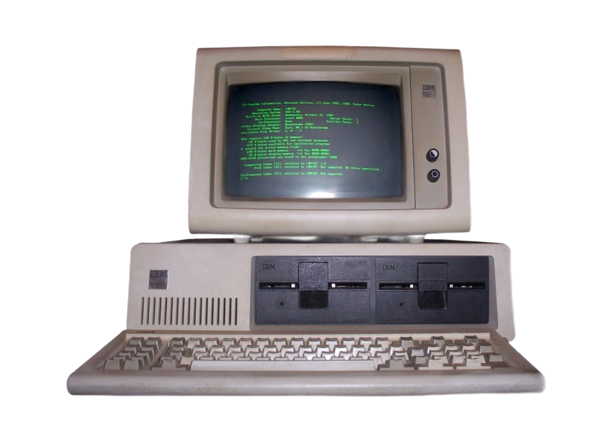
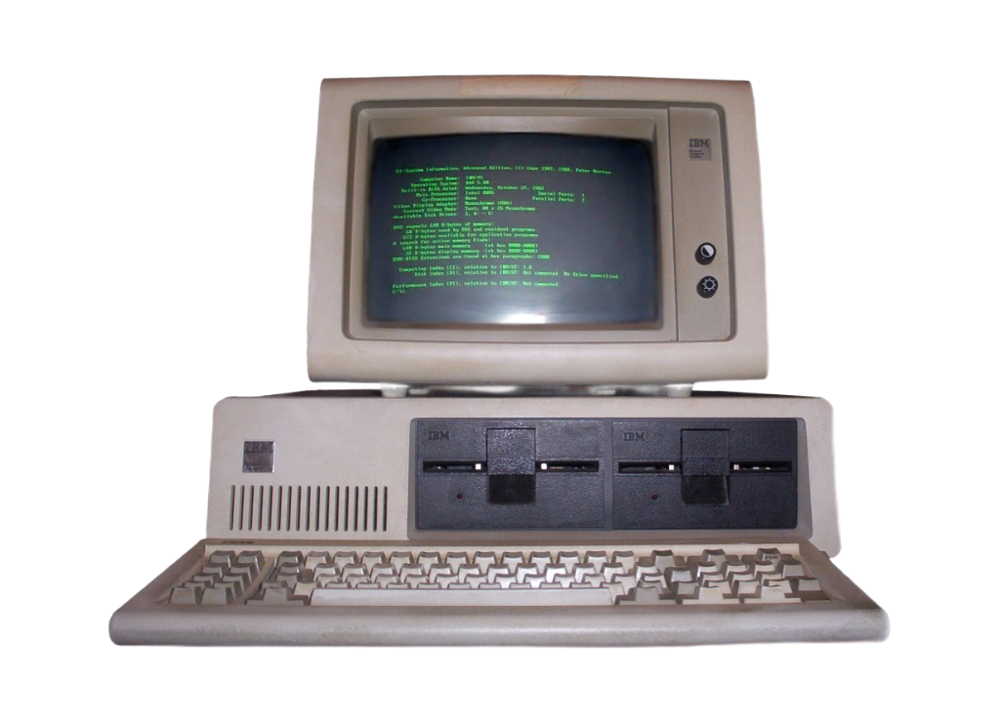

I was born in the 80s. Yes, the days of big bangs, side ponytails, and vibrant clothing colors. I was the third child of six. I have three sisters and two brothers.
 Computers in homes were rare when I was born. However, when I was about six years

old, I remember the excitement of getting our first home computer.
The black screen with green text was amazing! At the time, our home computer was the most exciting technological advance I had experienced and it was about that time that there were reports of this progressive new thing called the internet.
Computers in homes were rare when I was born. However, when I was about six years

old, I remember the excitement of getting our first home computer.
The black screen with green text was amazing! At the time, our home computer was the most exciting technological advance I had experienced and it was about that time that there were reports of this progressive new thing called the internet.
Fast forward a few years, we upgraded to a computer with a colored screen! It was beautiful! More and more homes were becoming equipped with computers and black and white printers. Colored printers were only for the elite. My parents also got the internet in our house, the best sound I had ever heard was the sequence of
fuzziness and beeps as we connected to the world. The next best technological advance came with the internet--AOL! I would spend hours taking useless quizzes, instant messaging my friends, and playing music. My parents had to get a second phone line because my siblings and I were spending a lot of time on AOL.
 By the time I got to High School, computer classes had evolved. We were taught how to use this new internet site called Google to do research and get information. We also were told we could look at so much information on Google that we would not need to use card catalogs any longer to do research. When I reached my senior year of high school, many people had cell phones and I got my first one. Those original Nokia phones with the snake game were popular among all. A disadvantage to cell phones in the beginning was that we could only talk during certain hours or our bill was higher and sending texts was a big no-no unless you wanted astronomical fees. There was no internet or cameras on those phones. And let's not forget that our television had no remote, you would have to get up and turn the dial to change the channel. We also had to rewind tapes to find the right song or the right scene. The evolution of technology has been exciting. In my lifetime so far, I went from having little technology in my home, to today, not being able to keep up with all the devices and latest and greatest thing.
By the time I got to High School, computer classes had evolved. We were taught how to use this new internet site called Google to do research and get information. We also were told we could look at so much information on Google that we would not need to use card catalogs any longer to do research. When I reached my senior year of high school, many people had cell phones and I got my first one. Those original Nokia phones with the snake game were popular among all. A disadvantage to cell phones in the beginning was that we could only talk during certain hours or our bill was higher and sending texts was a big no-no unless you wanted astronomical fees. There was no internet or cameras on those phones. And let's not forget that our television had no remote, you would have to get up and turn the dial to change the channel. We also had to rewind tapes to find the right song or the right scene. The evolution of technology has been exciting. In my lifetime so far, I went from having little technology in my home, to today, not being able to keep up with all the devices and latest and greatest thing.